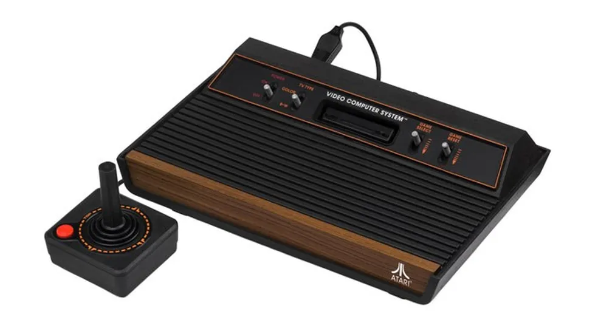
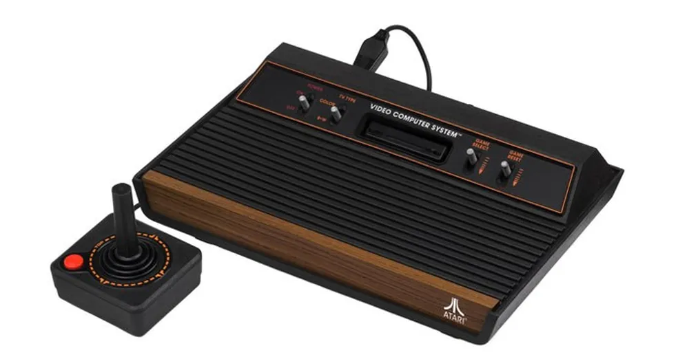

ERA DIGITAL
Entenda mais sobre o período marcado pelo rápido avanço científico e pela modernização das técnicas da informação e da comunicação.
Entenda mais sobre o período marcado pelo rápido avanço científico e pela modernização das técnicas da informação e da comunicação.
A era digital ou era da informação é o período técnico e científico que teve início na segunda metade do século XX, com o advento da Terceira Revolução Industrial, e que perdura até o presente. Tal período caracteriza-se pelo surgimento de novas tecnologias da informação e comunicação, pelo aprimoramento técnico da produção, pelos avanços no campo científico e, principalmente, pela intensificação dos fluxos de todos os tipos: de informações, capitais, pessoas e mercadorias.
A era da informação promoveu, com isso, maior integração entre territórios e entre pessoas, criando assim um espaço em rede. Observe a tabela abaixo que destaca os seus principais acontecimentos, que serão mais discutidos nos próximos tópicos:
| Período | Acontecimento |
|---|---|
| 1947-1969 | Origem da Era Digital, com o desenvolvimento de computadores e o início da pesquisa em computação |
| 1969-1989 | Invenção da Internet, ascensão dos computadores domésticos |
| 1989-2005 | Invenção da World Wide Web (WWW), popularização da Internet, Web 1.0 |
| 2005-2020 | Web 2.0, mídia social, smartphones, TV digital |
Deu-se o início à Era Digital.
Em 1947, o primeiro transistor funcional, o transistor de contato pontual baseado em germânio, foi inventado por John Bardeen e Walter Houser Brattain enquanto trabalhavam com William Shockley nos Laboratórios Bell. Isso abriu caminho para computadores digitais mais avançados. A partir do final da década de 1940, universidades, militares e empresas desenvolveram sistemas de computador para replicar digitalmente e automatizar cálculos matemáticos que antes eram realizados manualmente, sendo o LEO o primeiro computador de uso geral disponível comercialmente.


Outro desenvolvimento tecnológico importante inclui a invenção do chip de circuito integrado monolítico por Robert Noyce na Fairchild Semiconductor em 1959.
Após o desenvolvimento dos chips de circuitos integrados MOS no início da década de 1960, os chips MOS atingiram maior densidade de transistores e menores custos de fabricação do que os circuitos integrados bipolares em 1964. Os chips MOS aumentaram ainda mais em complexidade a uma taxa prevista pela Lei de Moore, levando à integração em larga escala (LSI) com centenas de transistores em um único chip MOS no final da década de 1960.
A aplicação de chips MOS LSI à computação foi a base para os primeiros microprocessadores, quando os engenheiros começaram a reconhecer que um processador de computador completo poderia ser contido em um único chip MOS LSI.


A tecnologia MOS também levou ao desenvolvimento de sensores de imagem semicondutores adequados para câmeras digitais.[24] O primeiro sensor de imagem desse tipo foi o dispositivo de carga acoplada, desenvolvido por Willard S. Boyle e George E. Smith nos Bell Lab em 1969, com base na tecnologia de capacitor MOS.
Desenvolvimento da ARPANET e a Ascensão do Computador Doméstico.
O público foi apresentado pela primeira vez aos conceitos que levaram à Internet quando uma mensagem foi enviada pela ARPANET em 1969. Redes de comutação de pacotes, como ARPANET, Mark I, CYCLADES, Merit Network, Tymnet e Telenet, foram desenvolvidas no final da década de 1960 e início da década de 1970 usando uma variedade de protocolos.
A ARPANET, em particular, levou ao desenvolvimento de protocolos para interconexão de redes, nos quais várias redes separadas podiam ser unidas em uma rede de redes.
Na década de 1970, foram introduzidos o computador doméstico, os computadores de tempo compartilhado, os consoles de videogame, os primeiros videogames operados por moedas e a era de ouro dos videogames de fliperama começou com Space Invaders.
Nos países desenvolvidos, os computadores alcançaram semi-onipresença durante a década de 1980, quando chegaram às escolas, lares, empresas e indústrias. Caixas eletrônicos, robôs industriais, CGI em filmes e televisão, música eletrônica, sistemas de quadros de avisos e videogames, todos alimentaram o que se tornou o zeitgeist da década de 1980.
Milhões de pessoas compraram computadores domésticos, tornando famosos os primeiros fabricantes de computadores pessoais, como Apple, Commodore e Tandy. Até hoje, o Commodore 64 é frequentemente citado como o computador mais vendido de todos os tempos, tendo vendido 17 milhões de unidades (segundo alguns relatos) entre 1982 e 1994.
 



Em 1984, o US Census Bureau começou a coletar dados sobre o uso de computadores e da Internet nos
Estados Unidos; sua primeira pesquisa mostrou que 8,2% de todas
as famílias estadunidenses possuíam um computador pessoal em 1984, e que as famílias com crianças
menores de 18 anos de idade tinham quase o dobro de probabilidade
de possuir um, 15,3% (as famílias de classe média e média alta eram as mais propensas a possuir um,
22,9%).
Algumas curiosidades do período:
Popularização da Internet e a Web 1.0
Tim Berners-Lee inventou a World Wide Web em 1989, quando cerca de 15% de todas as famílias nos
Estados Unidos possuíam um computador pessoal.
A World Wide Web tornou-se publicamente acessível em 1991, antes disponível apenas para governos e
universidades. Em 1993, Marc Andreessen
e Eric Bina introduziram o Mosaic, o primeiro navegador da web capaz de exibir imagens em linha e a
base para navegadores posteriores, como
o Netscape Navigator e o Internet Explorer.
E então, grandes instituições começaram a oferecer serviçoes online:

Assim, no ano 2000, a maioria dos lares dos EUA tinha pelo menos um computador pessoal e acesso à
Internet no ano seguinte.
Dois anos depois, a maioria dos entrevistados nos EUA relatou ter um celular.
Mídias sociais, smartphones e TV Digitais
No final de 2005, a população da Internet atingiu 1 bilhão de usuários e 3 bilhões de pessoas em todo o
mundo usavam telefones
celulares no final da década. Além disso, nessa mesma época, a HDTV se tornou o formato padrão de
transmissão de televisão em muitos
países no final da década.
Alguns marcos do período: